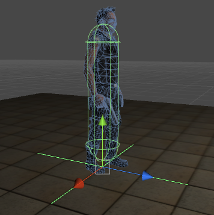
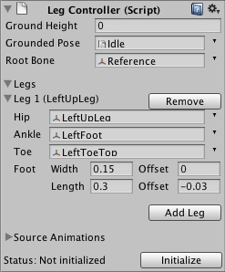
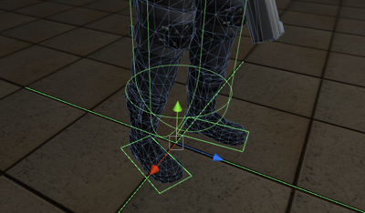
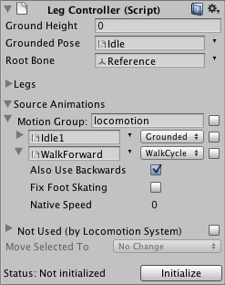
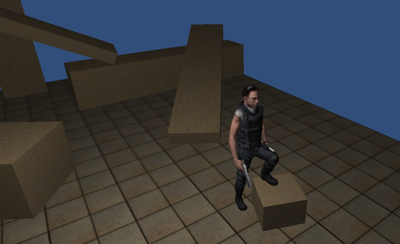
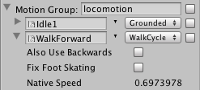
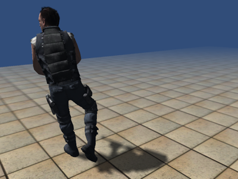
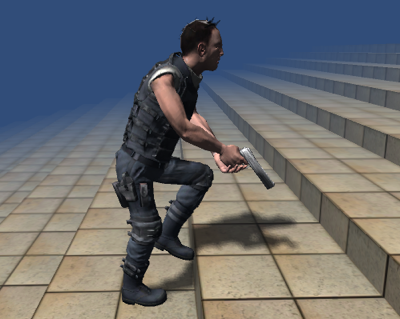
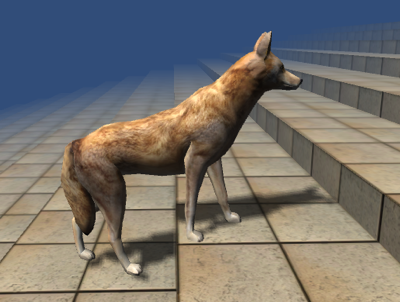

Version 1.0.3 - for Unity 2019.4 or higher
Locomotion System
Grounding your walking and running animations, in any direction, on any terrain.
By Rune Skovbo Johansen
runevision.com
In collaboration with Unity Technologies ApS
unity3d.com
Introduction
The Locomotion System for Unity automatically blends your keyframed or motion-captured walk and run cycles and then adjusts the movements of the bones in the legs to ensure that the feet step correctly on the ground. The system can adjust animations made for a specific speed and direction on a plain surface to any speed, direction, and curvature, on any surface, including arbitrary steps and slopes.
The Locomotion System can be used with characters with a skinned skeleton and some animations. The character must have at least one leg, and each leg must have at least two segments. The character must also have at least one idle animation (it can be just one frame) and at least one walk or run cycle animation.
The Locomotion System does not enforce any high level control scheme but rather lets you move your character around by any means you desire. The Locomotion System silently observes the position, alignment, velocity and rotational velocity of your character and deduces everything from that, along with some raycasts onto the ground.
This flexibility means that you can use a Character Controller, a Rigid Body, or something else entirely to move your character around in the world, exactly as you would normally do.
The Locomotion System is not:
- A physics-based system or active animated ragdoll system.
The system has no integration with the physics simulation. It is purely kinematic, though it does base the kinematics on some raycasts onto the geometry of the ground. - A behavior-based system.
The system cannot make the character react instinctively to external forces such as being punched, tripping and falling, or being shot. The system only blends and slightly adjusts your existing animations. - A unified system that can be used for all animation of a character.
The system only controls the legs. (The whole body is typically implicitly controlled since the system blends together multiple full body animations. However, this can be overridden by the user with specific animations for the upper body, using the usual means available in Unity.)
For the Locomotion System to work, you only need the files in the folder Assets / Locomotion System Files / Locomotion System. All other files are not directly part of the Locomotion System and do not have to be included in your project. However, the Quick Start Guide below uses additional files from the project folder.
This document contains the following sections:
- Quick Start Guide
- Additional Features
- Reference
- Terms of Use
Quick Start Guide
This Quick Start Guide contain the following parts:
- The Basic Scene Setup
Here we set up a scene for the character. We also add the character and some scripts to let us move him around with the arrow keys (or a gamepad). - Setting Up The Locomotion System
Now we set up the Locomotion System and actually get it to work. - Adding Running
We add a run cycle animation to the Locomotion System so that the character can both walk and run. - Using More Animations
Here we add animations for strafing left and right and going backwards, to enhance realism.
The Basic Scene Setup
For this Quick Start Guide it is assumed that you use the included Hero character.
- Place the Hero model in the scene. The hero model is located at Assets > Characters > Hero Artwork > Hero. Set position to (0, 0, 0).
You can use any means to move the character around. In this Quick Start Quide we will use a standard Character Controller component to handle collisions and a few script components to handle input and movements.
- Place a floor with a collider under your character. You can use the menu GameObject > 3D Object > Plane. Set position to (0, 0, 0).
- Add a Character Controller component to the character to handle collisions. Adjust the values to fit. For example: Center Y 0.88, Radius 0.2, Height 1.6.
- Add a Normal Character Motor script to the character to handle movements.
- Add a Platform Character Controller script to the character to handle input.
(Note that none of these are part of the Locomotion System. You may use your own solutions instead.)
- Make sure that the Character Controller fits the character such that the feet are neither intersecting the floor, nor hovering over it. Test it in Play mode.

- Press the Play button. You should now be able to use the arrow keys to move the Hero character around, though he isn't properly animated yet.
Setting Up The Locomotion System
Let's begin to setup the Locomotion System.
- To begin with, the character should just have an Animation component (if your character doesn't have one, there is something wrong). Uncheck the option Play Automatically.
- Add a Leg Controller script component to the character (located at Assets > Locomotion System > LegController). It must be on the same game object that has the Animation component.
- Set the Ground Plane Height on the Leg Controller component. A green gizmo cross should appear at the level of the character's feet. For the Hero character the ground plane height is 0.

Note that the height is measured in units prior to applying the transform of the character. This is to make sure you can use a different position, rotation, and scale of your character later without having to change the Leg Controller variables accordingly.
- Drag the character's idle animation onto the variable called Grounded Pose. A quick way to get to the animations in the Project pane is to click on the animation clip in the Animation variable of the Animation component. For the Hero character the idle animation is called Idle1.
- The Root Bone should be the bone that is the root of the animated hierarchy. By default it will be set to the parent bone of the hip bone in the first leg, if you don't set it yourself.
- Expand the Legs section on the Leg Controller component. This section should hold setup data for all the legs.
- Click the Add Leg button. Expand the newly created Leg 1 property to see its settings, and then do the following:
-

- Find the hip bone (upper leg bone) in the skeleton hierarchy of the character for the given leg and drag it to the variable called Hip. For the Hero character it is Hero > Reference > Hips > LeftUpLeg (for the left leg).
- Find the ankle bone (foot bone) and drag it to the variable called Ankle. For the Hero character it is Hero > Reference > Hips > LeftUpLeg > LeftLeg > LeftFoot (for the left leg).
Note that the Ankle variable should really hold whatever bone controls the rotation of the foot. For humans that will be the ankle, but for some animals the ankle is placed quite high up on the leg, and the bone directly controlling the foot (or paw or hoof) should be used instead.
- If the character has a toe bone (or even toe tip bone) then drag it onto the Toe variable. Otherwise just use the lowest available bone in the leg and drag it onto the Toe variable, even if it is just the ankle bone (foot bone) again.
- Set the Foot Width, Length, and Offsets. A green gizmo rectangle should be drawn around the foot which you can use to verify that the dimensions and offset are correct. Again those measurements are in units prior to scaling.

- When satisfied with the first leg, click the Add Leg button to add leg properties for the remaining legs of the character as well. The remaining legs have now copied the Foot Width, Length, and Offsets data from the first leg, so you may not need to set those again if the other feet are similar to the first one.
- You must still set the correct Hip, Ankle and Toe transforms for each leg though. Do it the same way you did it for the first leg.
- Expand the Source Animations section on the Leg Controller component.
The Source Animations section in the Leg Controller component should contain all animations that the Locomotion System should handle. This normally includes:
- All walking and running animations.
- All animations where the character is standing on the ground.
- Not animations where the character is jumping or otherwise airborn.
- Not animations only applied to the upper body (so they don't affect the legs).
In this Quick Start Guide we will first test the Locomotion System with just a few animations to get started quick and see how that looks. Then we will add more animations and see how that improves the way the character moves.
- If you are using the Hero character in this Quick Start Guide, proceed as follow:
- Under the group Not Used, select the Idle1 and the WalkForward animations using the checkboxes to the right of them.
- Use the Move Selected To dropdown and select New Group.
- The animations are moved to a new group called MotionGroup1. Let's rename it to locomotion.
 - Change the Motion Type of the Idle1 animation from WalkCycle to Grounded.
- Expand the settings of the WalkForward animation and enable Also Use Backwards.
- Click the Initialize button.
- Add a Leg Animator script component to the character (located at Assets > Locomotion System > LegAnimator).
- Set the Layer of the character to Player. This is not required by the system, but you need to make sure in any case that the variable Ground Layers in the Leg Animator component does not include the character itself. This is so that the raycasts used by the Locomotion System don't hit the collider of the character itself.
- Press the Play button. Use the arrow keys to move the Hero character around. The motion doesn't look quite right (though it may improve if you hold down Shift). Will get back to this a bit further down.
You can now make the environment a bit more interesting by adding tilted surfaces, small and big crates and steps, etc. Two values are important for determining how big steps up the character can take: The Step Offset value in the Character Controller component and the Max Step Height value in the Leg Animator component.
If you want to be able to let the character not only walk forward but also for example strafe sideways or walk backwards, you can add an Aim Look Character Controller script (located at Assets > Character Controller Scripts > AimLookCharacterController). Note again that this is not part of the Locomotion System itself, and you can also control the walking direction in your own scripts simply by controlling the movement and rotation of the character. The Aim Look Character Controller requires that you define two new axes called Horizontal2 and Vertical2 in the input settings. Use the menu Edit > Project Settings > Input. You can for example let the old axes be controlled by the arrow keys only and new axes be controlled by A, D and S, W.
Adding Running
We currently have the character walking around using just one idle animation and one walk cycle animation. The walk doesn't look completely realistic. This is (mostly) because the character actually moves around faster that what would be the native speed that matches the walk cycle we use.
- In the Leg Controller component, expand the Source Animations section and expand the WalkForward animation settings. Notice that the expanded settings have a read-only variable called Native Speed.
The Native Speed variable is the speed that matches a given walk cycle best.
The Native Speed is around 0.7 for the WalkForward animation of the Hero character. This means that it must move around with a speed of 0.7 to match the animation perfectly.
- In the Normal Character Motor script component set the Max Forward Speed to 0.7, and the same for the other speeds.
- Press the Play button. The movements now look much more realistic, but they're also very slow!
Always make sure that the animations you make actually match how fast you want the character to move around in the game. The Locomotion System determines the native speed of walk and run cycles by analyzing how fast the feet are moving when they are closest to the ground. In animations of high quality, the feet are moving with a constant speed while they're supposed to be on the ground. This is because for a given walk or run cycle the ground should be moving with a constant speed relative to the character.
- Let's get the character moving faster! Expand the Not Used list, select the animation clip called RunForward and move it to the motion group we created earlier called locomotion. You can enable "Also Use Backwards" for the RunForward animaton as well.
- Click the Initialize button.
- Look at the Native Speed of the RunForward animation and set the speeds of the Normal Character Motor component to that value.
- Press the Play button. The character can now run. (Well it's not really a proper run but that's because the animation is like that. At least it's faster than the walk.)
Notice how if you run in one direction and change fast to run in the opposite direction, the character actually runs sideways for a moment, while turning around. This is because the direction the character moves in changes faster than the direction the character is facing in. While the Normal Character Motor is responsible for this behavior, it is the Locomotion System that makes it look good. This is a thing the Locomotion System handles well and which can improve the realism of walking and running a lot. In real life, persons don't turn around fully before moving in a new direction!
If a gamepad is used, such as an Xbox 360 controller, the speed of walking/running can be controlled with the analog stick. If only a keyboard is available, slower walking can be achieved by pressing shift. This is a function of the Platform Character Controller script that was added to the character to handle input. Since the native speed of the WalkForward animation is about 25% of the native speed of the RunForward animation, try to set the Walk Multiplier value of the Platform Character Controller to 0.25.
Using More Animations
So far we have gotten by with just three animations. To make the movements look more realistic when walking and running sideways and backwards, you can add some more animations when available. (You can skip this section if you want.)
- In the Source Animations section in the Leg Controller component, disable the Also Use Backwards option for the WalkForward and RunForward animations.
- Expand the Not Used list and select the following animation clips:
- WalkBackward
- RunBackward
- WalkStrafeLeft
- RunStrafeLeft
- WalkStrafeRight
- RunStrafeRight
- Move the selected clips to the locomotion motion group we created earlier.
- Then click the Initialize button. Then press Play.
The character now walks and runs with great realism in all directions.
The system generally takes care of automatically blending the right animations with the right weights. When no backwards animations are available, the Also Use Backwards option should generally always be enabled for the forward animations, even if the character is never intended to walk backwards. The system will then use the forward animation played backwards as if it was an extra animation and this improves the blending for all directions. A strafe left animation can also double as a strafe right when Also Use Backwards is enabled etc.
This concludes the Quick Start Guide. The next section is not written as a tutorial but goes in details with additional features of the Locomotion System that are useful for integrating the system in your game and improving the realism further.
Additional Features
This section contain the following parts:
- Blending and Cross Fading
This part is about how to interface with the Locomotion System from your own scripts. An example script is described which can be used to control waiting and jumping animations. - Leaning
Enhance the realism further by making characters lean when walking on steep surfaces and when accelerating. - Ground Hugging for Non-Bipeds
Creatures with more than two legs support their weight differently than humans and other bipeds. The Locomotion System has two simple settings to handle that.
Blending and Cross Fading
So far the Locomotion System has been in control all of the time for just walking and running. In this section we will take a closer look at how to blend and cross fade between different animations so that the character can do more than just standing, walking, and running.
The Locomotion System uses a concept of motion groups. A motion group is a group of animations that can be controlled as a whole. A motion group can have one or more animations of type Walk Cycle and optionally one animation of type Grounded. A motion group should not contain two animations with the same velocity. This is also why they should have at most one grounded animation, since grounded animations always have zero velocity.
Motion groups can be used to specify groups of animations with the same style. For example, you might have one group including a normal idle, walk, and run animation, and another group including a sneaky idle and walk animation. It can then be controlled from scripts which motion group is in effect, while the weights of the individual animations within motions groups are controlled automatically by the Locomotion System.
In the previous sections we set up all the animations in the Locomotion System with the motion group name "locomotion". The name "locomotion" is just an example. It can be any name.
In your own scripts the Locomotion System can be blended in and out by using a motion group name as an animation name, for example:
animation.CrossFade("locomotion",0.5f);
This will fade the Locomotion System in over half a second. It will also automatically be faded out if other animations are cross faded in, just the same way as it works with other animations. You can also set the weight directly the same way as for other animations:
animation["locomotion"].weight = 0.8f;
Blending, crossfading, and weights generally work the same as for other animations. However, the Locomotion System is not compatible with the functions CrossFadeQueued and PlayQueued. Those functions can still be used on animations that only affect the upper body, but they should not be used with animations controlled by the Locomotion System. Also note that the individual animations in a motion group should not be handled manually; the Locomotion System will take care of those exclusively.
Animations that are not in motion groups come in two flavors: Those that are handled by the Locomotion System and those that are not.
- To add an animation to the Locomotion System that should not be in a motion group, just select it and move it to Ungrouped using the Move Selected To dropdown. You can now set the weight of that animation the same way you would normally do, and the feet will be standing correctly on the ground.
- To use an animation that is not handled by the Locomotion System (i.e. that is under the Not Used list), simply use it the same way you normally would. When such animations are used, the effects of the Locomotion System are blended down so that the legs are no longer adjusted to stand on the ground. This is useful for example for jumping animations.
The script JumpAndIdle.cs shows how to fade to a jumping animation while jumping and how to fade to an extended idle animation while inactive for a little while. Try it out:
- Select the animation Idle2 in the Not Used list and move it to Ungrouped.
- Remember to click the Initialize button.
- Add a Jump And Idle script component to the character Assets > Character Controller Scripts > JumpAndIdle.
- Drag the animation clip AimIdle to the variable called Jumping Animation.
- Drag the animation clip Idle1 to the variable called Idle Animation.
- Drag the animation clip Idle2 to the variable called Waiting Animation.
The Hero character unfortunately doesn't have a proper jumping animation so the AimIdle animation will have to do for the sake of demonstration.
- Press Play.
Try to jump by pressing Space. (This requires that the input settings have an input named Jump that is mapped to the space key.) Try to stand still for a little while and watch the character scratch his head.
Leaning
When accelerating, a character will often lean in order to avoid falling over. This includes leaning slightly forward when transitioning from standing to walking, or leaning sideways when running in a sharp curve.
The Locomotion System does not support using specific animations for accelerating. However, the Locomotion System has settings to enable procedural leaning based on acceleration.
- In the Leg Animator component, the settings Accelerate Tilt Amount and Accelerate Tilt Sensitivity control the leaning based on acceleration. The tilt amount is a simple multiplier; the default value is 0.02 but it has no effect if the sensitivity is zero. The tilt sensitivity is sensitive to speed. A high value will make the character lean maximally even at low speeds while lower values will only lean the character when there is significant speed. A good starting point for the value is 10 divided by the maximum speed the character will be moving with.

In the real world, leaning occurs not only when accelerating, but also when walking up or down slopes or steps (this assumes a character with two legs). The Locomotion System has two settings to control leaning based on climbing slopes and steps.
- In the Leg Animator component, the settings Climb Tilt Amount and Climb Tilt Sensitivity control the leaning based on acceleration. The tilt amount is a simple multiplier; the default value is 0.5 but it has no effect if the sensitivity is zero. The climb tilt sensitivity is sensitive to speed just like the acceleration tilt sensitivity described above.

Ground Hugging for Non-Bipeds
Creatures with more than two legs support their weight differently than humans and other bipeds. Typically the creature aligns its body along the ground. The Locomotion System has two simple settings to handle that. In the Leg Animator component, the settings Ground Hug X and Ground Hug Z aligns the local X and Z axis of the body with the ground, respectively. For both of them, a value of 0 means no alignment while 1 means full alignment. Typically either 0 or 1 is used for each axis, but values in between can be used too.
- Humans, birds, and other creatures with two legs typically should have Ground Hug X: 0 and Ground Hug Z: 0. This means that the body is not rotated with the ground.
- Dogs, cats, horses, and other creatures with four legs should typically use Ground Hug X: 0 and Ground Hug Z: 1. This mean that the front-to-back (for example head-to-tail) axis of the creature is aligned with the ground, while the sideways axis is left untouched. (This assumes that the creature is aligned along its local Z axis.)
 - Spiders, bugs, crabs, and other creatures that are either rather flat or has almost no weight should use Ground Hug X: 1 and Ground Hug Z: 1. This aligns the body completely with the ground in both axes.
The ground hugging feature works together with the leaning (tilting) feature described in the previous part. By design, leaning will only affect axes that are not fully ground hugged. For example, a dog with Ground Hug X: 0 and Ground Hug Z: 1 can lean sideways (along its local X axis) when running in a sharp turn, but will never lean forward or backwards (along its local Z axis).
Reference
The documentation above covers most features of the Locomotion System. Below is a reference of all the parameters in the LegAnimator component.
- Start Automatically : Use the Locomotion System from the beginning when the scene loads or the character is instantiated. This will set the weight of the first motion group to 1 upon start.
- Use IK : Use inverse kinematics to make the legs adjust to the ground. Disable this if you only want to use the Locomotion System for the automatic animation blending it offers.
- Max Foot Rotation Angle : The maximum angle (in degrees) the inverse kinematics will turn the foot in order to avoid foot sliding.
- Max IKAdjustment Distance : The maximum distance (in units) the inverse kinematics will move the foot in order to avoid foot sliding. If you experience the legs getting into unnatural looking poses, you can decrease this value to restrict how much the Locomotion System can change the pose of the legs. Low values may cause foot sliding though, so this is a trade-off.
- Min Step Distance : Prevent the character from taking steps smaller than this distance (in units).
- Max Step Duration : Prevent the character from taking steps that take longer than this (in seconds).
- Max Step Rotation : The maximum rotation the character can do without taking a step. Setting this higher will make the character take fewer steps when rotating fast.
- Max Step Acceleration : The maximum amount the character can accelerate without taking a step.
- Max Step Height : The character will not attempt to take steps higher than this. Artifacts may happen if the character is forced over higher steps than this.
- Max Slope Angle : The character will try to avoid to take steps on slopes steeper than this.
- Enable Leg Parking : This will let the character stand still when coming to a stop rather than keeping moving the legs.
- Blend Smoothing : How much smoothing to apply when blending into different animations. For example, when you apply motion to the character the Locomotion System will blend from e.g. idle to walk with the blending amount specified. Note that making the velocity change gradually will cause some smoothing of the blending on it's own, but the Blend Smoothing parameter can be used to smooth the transition further.
- Ground Layers : The layers the system will raycast against to find out where to step on.
- Ground Hug X : Aligns the local X axis of the body with the ground. 0 means no alignment while 1 means full alignment. Animals that are more flat than tall, such as spiders or crabs, should typically have both Ground Hug X and Z set to 1.
- Ground Hug Z : Aligns the local X axis of the body with the ground. 0 means no alignment while 1 means full alignment. Animals that are more long than tall, such as most four-legged animals, should typically have Ground Hug X set to 0 and Ground Hug Z set to 1.
- Climb Tilt Amount : How much the character should tilt when going up or down steps or slopes.
- Climb Tilt Sensitivity : How sensitive the character tilting is to the steepness of the steps or slopes. Higher sensitivity will make the character tilt at less steepness.
- Accelerate Tilt Amount : How much the character should tilt when accelerating or turning.
- Accelerate Tilt Sensitivity : How sensitive the character tilting is to acceleration. Higher sensitivity will make the character tilt at less acceleration or turning.
- Render Foot Markers : Used for debugging and visualization. Shows the previous and next footstep position for each foot.
- Render Blending Graph : Used for debugging and visualization. Shows a graph on the character that shows which animations are used with which blending weights. The positions of dots signify animations with different velocities. If there is more than one motion group, the different motions groups are color coded.
- Render Cycle Markers : Used for debugging and visualization. Shows a graph in the corner of the game view that shows the cyclic timing of all the feet.
- Render Animation States : Used for debugging and visualization. Shows a list with all the animation states so it's easy to see which ones are active and at which blending weight.